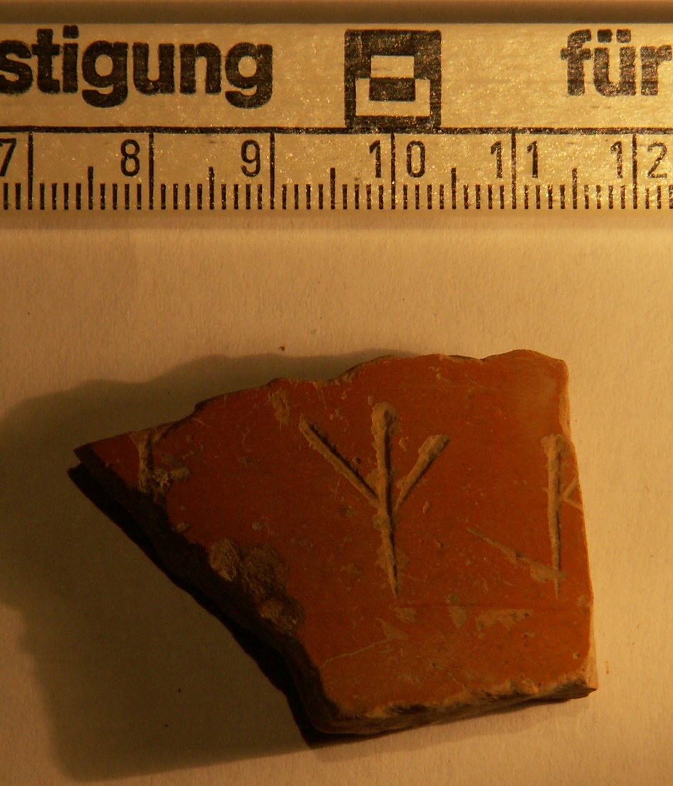

Grafito con posible inscripción paleohispánica «[- - -]ETI+[- - -] (posible signario paleohispánico)» (Pompelo, Plaza del Castillo, Pamplona, Navarra)
Pompelo (Pamplona, Navarra), Hispania citerior · fin s. II-III d.C.


Texto
Aparato crítico
Lectura tal como figura en el artículo: --- ]ETI+[---. Transcripción en caracteres latinos de posibles signos paleohispánicos.
Comentario
Inscripción con posible signario paleohispánico, la única de este tipo conocida en el contexto de Pompaelo, aunque sí en el territorio vascón. Se trata de una inscripción de, al menos, tres caracteres. El primero podría ser una «E», seguido del signo «Ti» y finalmente un signo semejante a una R latina, al que tradicionalmente se le ha otorgado el valor de «R», tal y como aparece en el segundo signo de la inscripción de la moneda arsaos.
Descripción
- Soporte
- Fragmento cerámico.
- Disposición
- Localización del grafito: Pared.
- Datación
- fin s. II-III d.C.
- Lugar de origen
- Pompelo (Pamplona, Navarra), Hispania citerior
- Hallazgo
- Excavación de la Plaza del Castillo de Pamplona (Gabinete Arqueológico Trama, 2001-2003), sector 3. Los estratos están revueltos (abundan las tumbas musulmanas del sector 3): la datación se basa en las formas cerámicas y el contexto es el de un barrio artesano.
- Ubicación actual
- Almacén de Arqueología del Gobierno de Navarra
Bibliografía
- M. Unzu; P. Ozcáriz Gil, «Grafitos nominales de la Plaza del Castillo de Pamplona», Los vascones de las fuentes antiguas: en torno a una etnia de la antigüedad peninsular (2009), pp. 499-512.
Cómo citar esta ficha
Ozcáriz Gil, P., Grafitos sobre cerámica romana: corpus EpiDoc, ficha pompelo-052-eti, https://pozcariz.github.io/grafitos-epidoc/pompelo-052-eti.html.